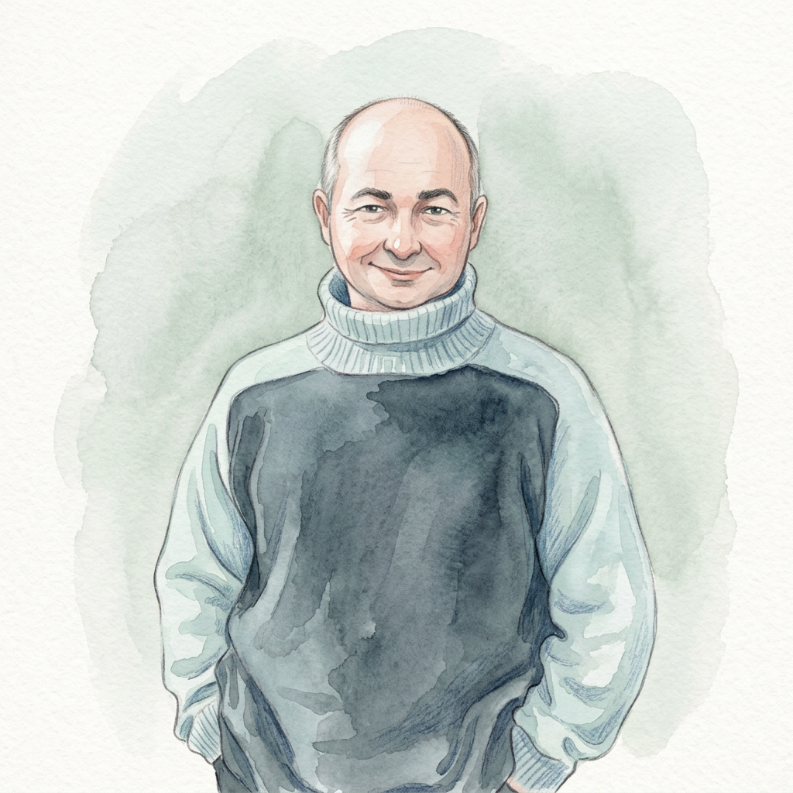
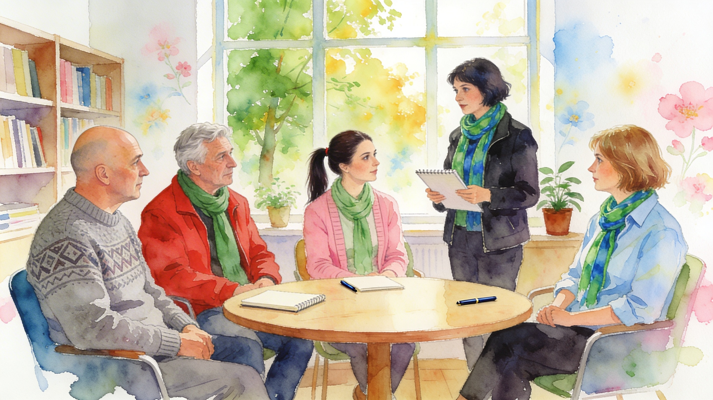
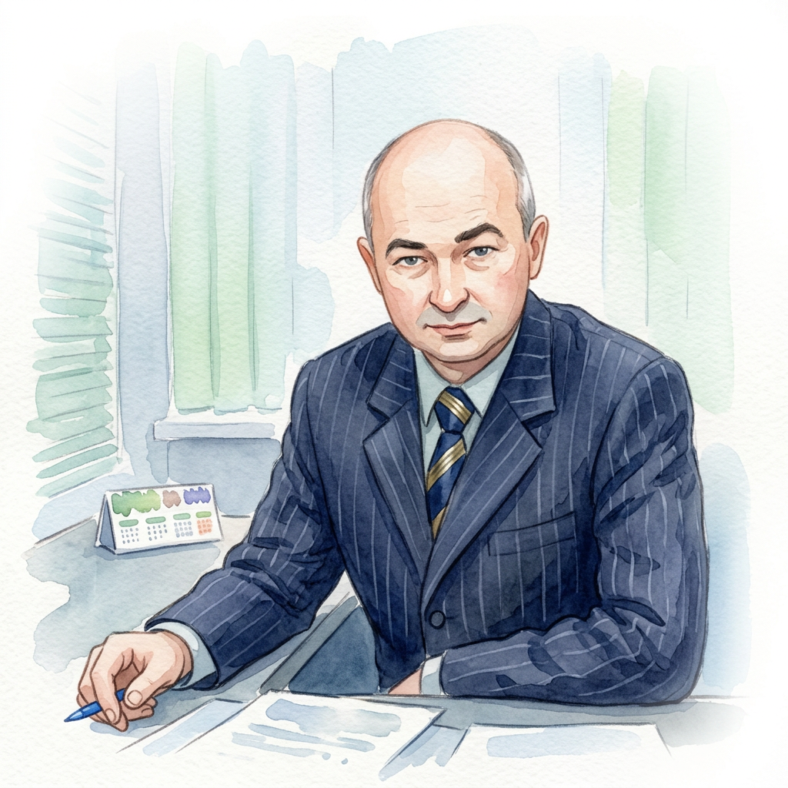
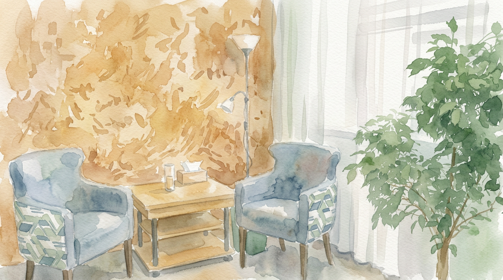
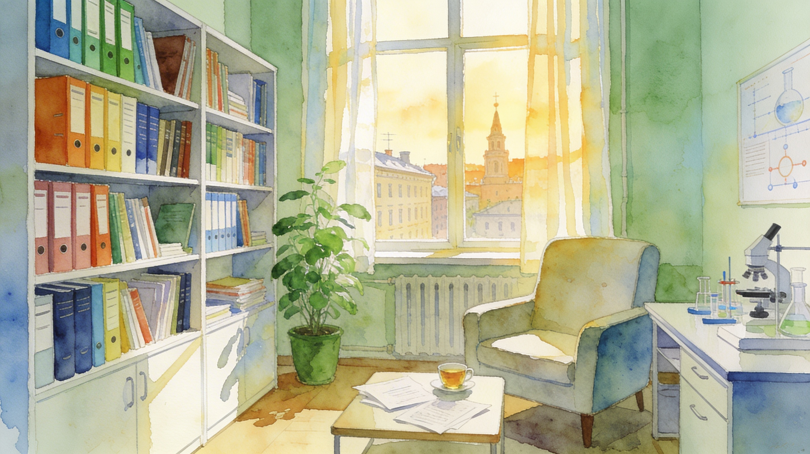

АналитикаЦСМИ «Аналитик»
Центр социологических и маркетинговых исследований. По преимуществу — опросы общественного мнения: системно изучаем социальные и рыночные процессы, превращая данные в практические выводы.
Волгоград · психолог · исследователь
Тёплое пространство для сложных вопросов
Василий Токарев — кандидат технических наук, доцент, юридический психолог, магистр социологии. Руководитель исследовательского центра, на базе которого создано PSY-содружество.

Тёплый, спокойный формат работы
Обо мне

Кандидат технических наук, доцент, юридический психолог, магистр социологии. Руководитель исследовательского центра, на базе которого создано PSY-содружество.
Я соединяю системный, исследовательский взгляд с бережным психологическим сопровождением. Мне важно, чтобы рядом с человеком был спокойный, профессиональный и человечный собеседник — тот, к кому можно прийти со сложным и не бояться осуждения.
На основе исследовательского центра я основал PSY-содружество — пространство, где психологи опираются друг на друга и на доказательный подход.
Когда «делаешь всё правильно», а чувствуешь, что застрял.
Трудности с принятием решений, ощущение зыбкой почвы под ногами.
Сложности с выражением эмоций, ролевые конфликты, поиск баланса силы и чувств.
Проекты

АналитикаЦентр социологических и маркетинговых исследований. По преимуществу — опросы общественного мнения: системно изучаем социальные и рыночные процессы, превращая данные в практические выводы.

ИсследованияИсследовательское пространство в Волгограде — база для академической и прикладной работы. Именно на его основе родилось PSY-содружество.

СодружествоСообщество психологов, разделяющих доказательный, человечный подход. Обмен опытом, супервизия и взаимная поддержка — внутри профессионального круга.
Контакты
Если вы оказались в точке выбора, кризиса или тихой неопределённости — напишите. Сначала просто познакомимся и посмотрим, подходим ли мы друг другу.
Волгоград, Россия · онлайн по всему миру